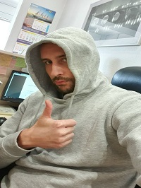
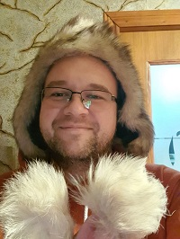
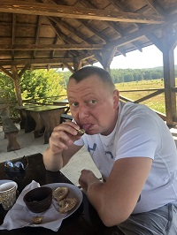
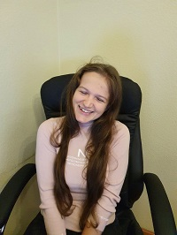
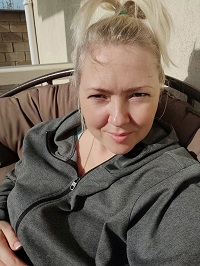

Члены Банды:
- 
- Даник он же Главный он же Биполярный он же Черный нотариус
Узнать его поближе
- 
- Адвокат он же Нудный он же Толстый он же Самыйсукаумный
Узнать его поближе
- 
- Витала он же Викторович он же Ловелас он же Качёк он же Хакер
Узнать его поближе
- 
- Ксюня она же Ксю она же Оксана Владимировна она же Скажена Китка
Узнать её поближе
- 
- Аня она же Анна Ивановна она же Анякл она же мадам Щасуебу
Узнать её поближе
Краткая история банды:
Началось всё как водится в таких случаях в баре. Где ещё? Трое великих и ловких и сильных и чертовски красивых собрались и решили организоваться вместе, чтобы их величие и ловкость и сила и красота (ну вы поняли)… умножались по прогрессивному принципу Гауссовской кривой.
Пещерой бетмена была объявлена пещера самого красивого из них (ну и единственного у кого была… пещера). От туда смелая банда проводила свои вылазки направленные на завладение честный трудом денежной массой клиентов (желательно в долларах). Банда проводила блистательные операции, которые могли бы войти в историю, но банда на столько тайная, что решила не афишировать свои достижения. Одно было неизменно - банда всегда доводила свою работу до конца... ну почти всегда - Нармина по-моему еще получает гражданство…. Не суть. Время шло и в банду вступили новые члены - две сногсшибательные бандитки. Одна в прямом смысле сногсшибательная (ну вы поняли, сшибает с ног независимо от габаритов сшибаемого), вторая, в следующем за прямым смысле (ну опять-таки вы поняли, своим умом, проницательностью и … русско-украинским суржиком). Со временем банда начала промышлять крупными делами, о банде начали говорить, в банду начали просится, каждый хотел отдать ей свои деньги.
Долгое время банда наводила веселье и порядок там где проворачивала свои дела. Но ничто не вечно и подобно большинству прекрасному в этом мире, банде пришлось распаться.
Однако все члены банды дружны и готовы поддержать друг друга в любой момент… этого не изменить (если только не Деменция, Паркинсон, Альцгеймер и еще ряд нейродегенеративных заболеваний).
А может... чем черт не шутит, когда-нибудь банда соберётся вновь.